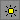

You can use this
procedure to highlight a set of paths and polygons as a connected
net. The layout viewer extracts the connectivity based on the intersection
of polygons and paths on layers. Each extracted net is represented
as a set of polygons on a unique layer. To remove the extracted
net, delete the generated net layer. If you reload a layout, all
extracted nets are deleted.
Prerequisites
Calibre
DESIGNrev is running in interactive GUI mode and a layout is open.
You
have defined connectivity using connect statements in your layerprops file.
In addition to layer numbers, you can use layer names in a connect
statement, however the names must have been previously loaded. If
the layer name definitions are in the same file as the connect statement,
an error is generated.
The
layer properties file must be loaded before extracting connectivity.
Note: If
connectivity is specified for active or diffusion layers, net extraction may
short through transistor source or drain pins. For this reason,
specifying connectivity for these layers is not suggested.
Procedure
- Choose .
This displays the Preferences
dialog box with the Nets tab selected.
- Choose the connectivity setting
for hierarchy levels:
- You can optionally set both
the starting layer number and range in the Highlight section of
this tab.
If you do not change the default
values, the first extracted net object will be written to layer
4222 and up to 50 consecutive net extractions will be kept.
- Select a polygon or path,
then right-click and choose Extract Net.
This opens the Nets tab
directly below the Layers palette. Both the Nets tab
and Layers palette display the name (net1) of the extracted net.
The Layers palette also displays the assigned layer number.
The first time you perform
net extraction, the assigned highlight layer number and number of
layers used for highlighting is based on the values defined by prefs_net_highlightBase
and prefs_net_highlightCount, respectively.
For example, the default prefs_net_highlightBase
number is 4222. If you do not change the default, then a base net
highlight layer number of 4222 is assigned to the extracted net
the first time you perform net extraction.
- Select another polygon or
path in the layout, then right-click and choose Extract
Net.
Notice the net highlight layer
number for the extracted net is incremented to 4223. Each net is
expanded to display the layers containing the intersecting polygons
and paths.
- Experiment with clicking the
“-” or “+” sign next to a net name to collapse or expand the extracted
net.
- Right click net1 on layer
4222 and select Delete Net from the popup
menu.
Notice the popup menu also
includes options for hiding, renaming, and exporting (to RVE or
to a file) the extracted net.
- Select another polygon or
path in the layout, then right-click and choose Extract
Net.
Notice the layer 4222 is reused
and assigned to the newly extracted net.
- Continue to extract nets from
the layout.
The default maximum number
of layers used for highlighting (prefs_net_highlightCount) is 50.
Once you reach this maximum, you can no longer use a layer for highlighting
and an error is issued. To continue highlighting extracted nets, you
must either delete some of the net layers or increase the value
of the prefs_net_highlightCount preference.
- Click the  (Emphasize
All Layers) button located at the top of the Nets palette to emphasize
the display of the extracted net layers in the Layout Viewing Area.
You can click this button again to toggle the display.
- Double-click a net name or
net segment in the Nets palette to hide the full extracted net or
net segment.
You can also right-click a
net name or net segment and choose Hide Net in
the popup menu to hide the extracted net in the Layout Viewing Area.
- Select a cell in the Cells
Browser, select a polygon or path, and then choose Extract
Net.
Notice the Nets tab
updates to display the name of the extracted net for the selected
cell.
Results
The nets displayed in the Nets palette
are specific to the currently viewed layout or cell. Switching to
the layout or a different cell automatically updates the list of
extracted nets, if any, to the current cell.